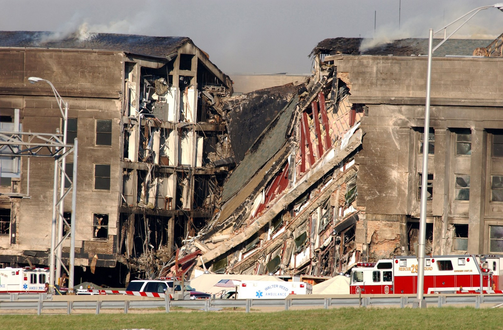

Directions: Fill in the chart as we study each part of the lesson. Keep this page in your notebook. You will use it again on the review day before the unit test.

| Record | Power claimed or finding made | Evidence offered | Check placed on it |
|---|---|---|---|
| The president's sentence, 2001 | |||
| The AUMF, September 18, 2001 | |||
| The PATRIOT Act, October 2001 | |||
| The Iraq decision, 2002 and 2003 | |||
| The findings of 2004 |
The standing argument in one paragraph. Officials who built the new machinery said the powers were necessary and pointed to the absence of a second attack on September 11's scale. Critics said the wars and the powers cost more than they bought. Using at least three rows of the chart, state which side the documents support more strongly on the evidence, and answer the other side's best point.
| Record | Power claimed or finding made | Evidence offered | Check placed on it |
|---|---|---|---|
| The president's sentence, 2001 | The power to answer the attacks with no distinction drawn between the terrorists and those who harbor them. | The attacks themselves, stated that night. The address named no country and presented no proof. | An address authorizes nothing. Congress had to grant the force, and did, one week later. |
| The AUMF, September 18, 2001 | All necessary and appropriate force against nations, organizations, or persons the president determines planned, authorized, committed, or aided the attacks, or harbored those who did. | The attacks, and the votes: Senate 98 to 0, House 420 to 1, Barbara Lee the only opposing vote. | The text ties force to the September 11 attacks and preserves the War Powers Resolution. The determination is the president's own. |
| The PATRIOT Act, October 2001 | Widened powers of surveillance, search, and detention in terrorism investigations, passed by overwhelming margins. | The emergency of the weeks after the attacks. The Senate approved it 98 to 1. | Section 102, in the same statute: a sense of Congress that civil rights and civil liberties must be protected. A declared standard, enforceable by no court. |
| The Iraq decision, 2002 and 2003 | War against Iraq on the stated ground that Iraq possessed stockpiles of weapons of mass destruction. | The administration's evidence, presented at the United Nations by Secretary of State Colin Powell in February 2003. | Congress authorized force in October 2002. The check that mattered came after: the Iraq Survey Group's search of the country itself. |
| The findings of 2004 | Findings, not powers: the Commission's judgment of failure, and the Survey Group's judgment that no stockpiles existed. | The Commission's record for 1998 to 2001, and the Survey Group's site searches, documents, and interviews in Iraq. | The findings check the earlier claims on the public record. Neither body could punish anyone; both fixed the terms of every later argument. |
The standing argument in one paragraph. Strong answers build the paragraph out of the chart's columns rather than out of opinion. The evidence column is fullest for the response to the attacks themselves: the doctrine answered a real attack, Congress voted the force nearly unanimously, and the Commission's finding explains the failure that preceded the powers. The evidence column is emptiest for Iraq, where the stated ground was a stockpile claim the government's own search retired in 2004. On the powers at home, the chart holds both the bulk collection revealed in 2013 and the standard Section 102 wrote into the statute in 2001. Either verdict earns full credit when it runs on three rows and answers the other side's best point, the absence of a second attack on one side, the Duelfer findings on the other. Grade the use of evidence, not the side taken.